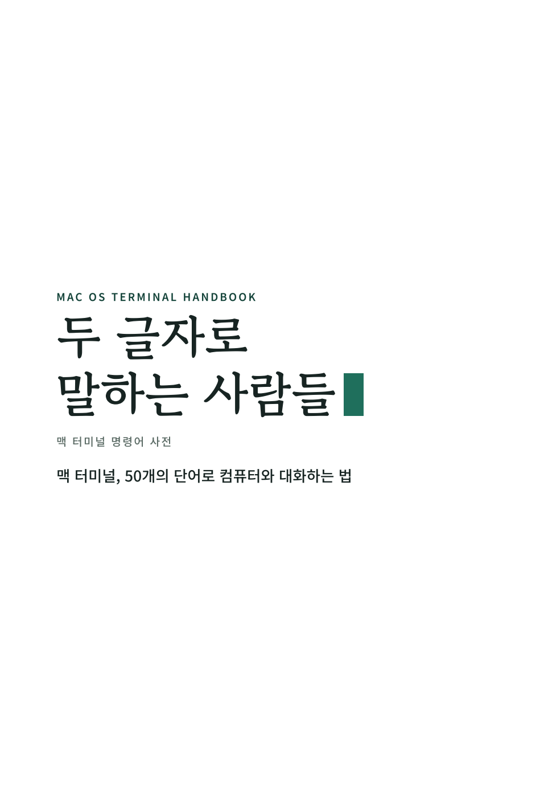
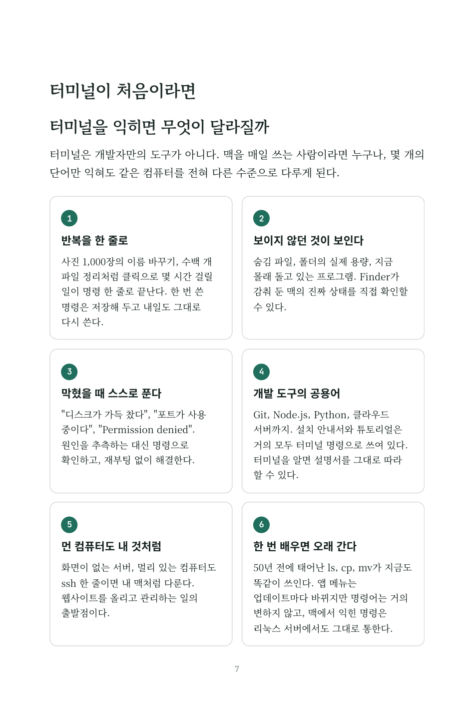
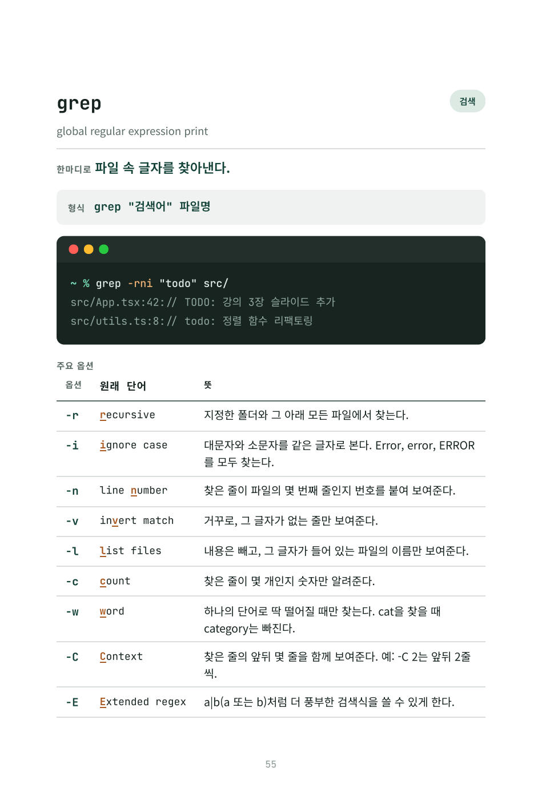
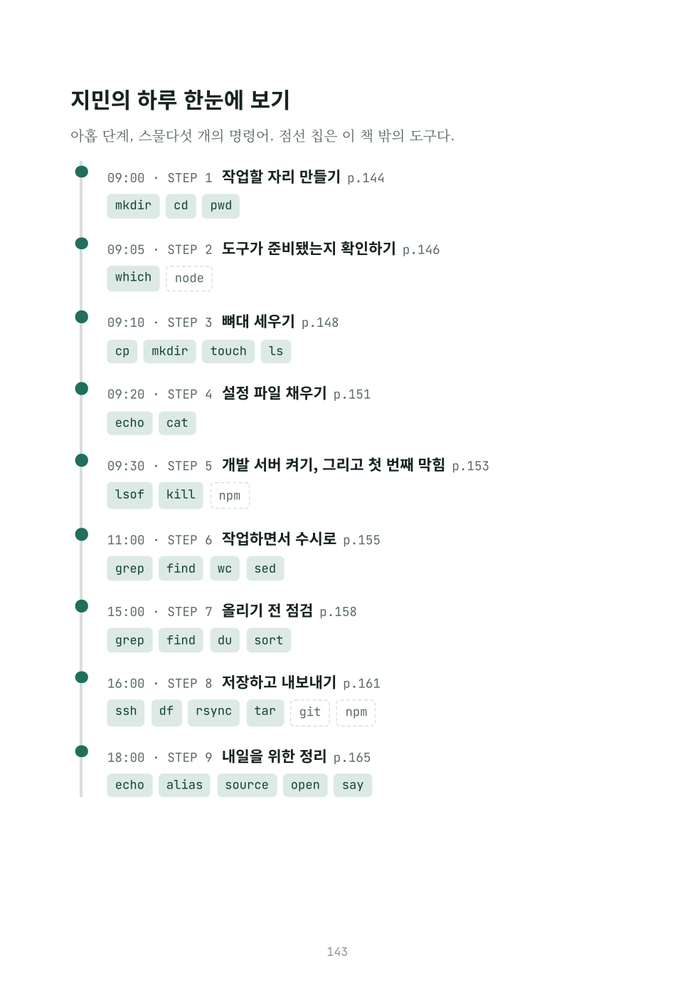
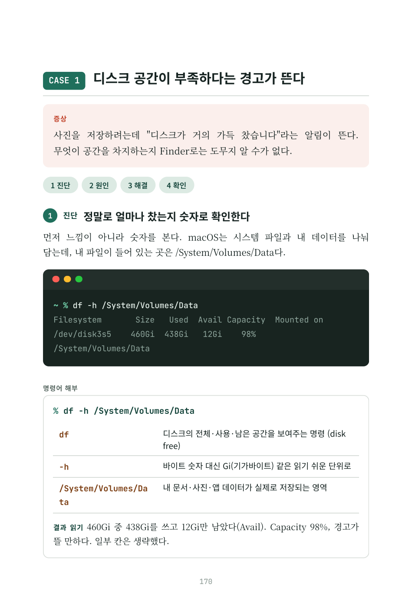
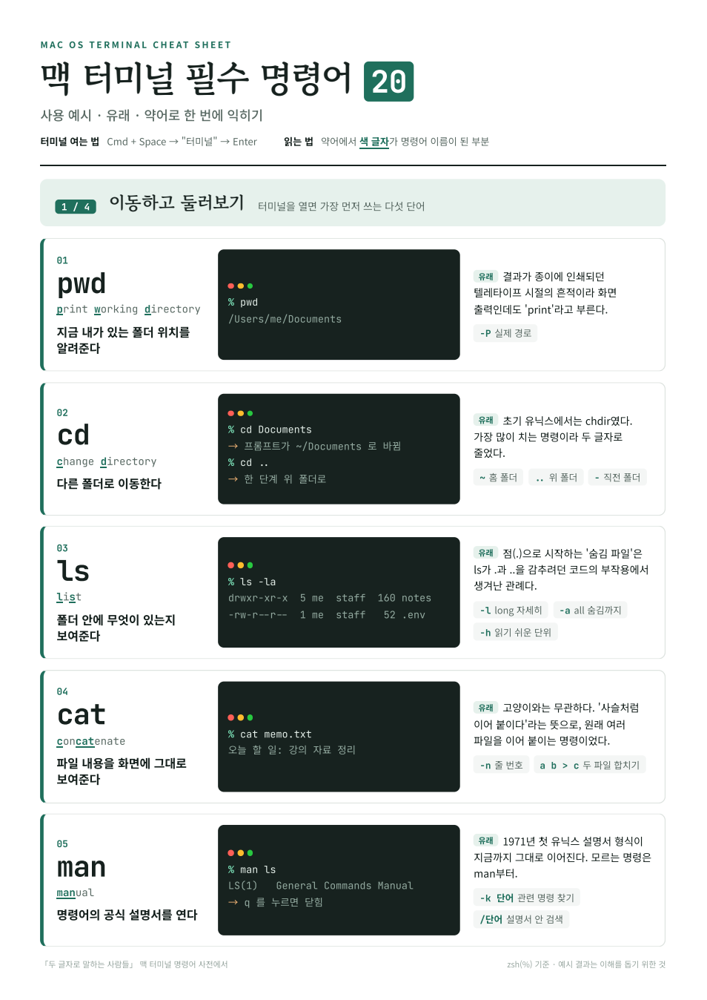

Mac OS Terminal Handbook · 전자책
두 글자로
말하는 사람들
맥 터미널 명령어 사전
맥 터미널, 50개의 단어로 컴퓨터와 대화하는 법
ls, cp, mv처럼 암호 같은 두 글자 명령어를 사용 예시와 결과, 이름의 유래, 옵션 글자의 원래 영단어로 풀어 쓴 핸드북입니다. 2부에서는 한 사람의 하루와 여덟 가지 실제 문제를 따라가며 명령어를 문장처럼 이어 쓰는 법을 보여줍니다.

Status
제작 현황
원고와 조판, 인쇄용 사전 점검까지 마쳤습니다. 출간 정보(판권·ISBN)와 표지만 남았습니다. 2026년 10월 3일 기준.
208쪽 · 신국판 152×225mm
50명령어 · 12개 장
206상황별 예제
65명령어 해부 (조각별 풀이)
8문제 해결 사례
- 완료원고 집필
- 완료조판 · 전자책 PDF
- 완료인쇄용 사전 점검
- 대기판권 · ISBN
- 대기펼침 표지
- 대기교보문고 POD 등록
완료끝난 작업
- 1부 두 글자 사전터미널 기초 16문항, 명령어 50개, 장별 빠른 참조표 12개
- 2부 두 글자로 문제 풀기13장 프로젝트 하루 따라 하기 · 14장 문제 해결 사례 8가지
- 옵션 표 46개에 원래 영단어 표기예: -r → recursive, -x → extract
- 쪽수가 맞는 목차 · 목적별 찾아보기 52항목 · PDF 책갈피
- 인쇄 사전 점검 통과판형 일치, 폰트 전부 내장(OFL), 시스템 폰트 0, 짝수 쪽수, 고아 제목 0
- 필수 명령어 20 요약본(A4 4쪽)
남은 일출간 전 할 일
- 판권면 · 저자 정보발행인, 발행처, 신고번호, 발행일, 정가 확정 필요
- ISBN 발급 · 바코드표지 확정 전에 먼저 필요
- 교보문고 POD 사양 확인지원 판형, 컬러/흑백 내지, 안쪽 여백
- 펼침 표지 제작책등 약 13mm(추정), 최종값은 유통사 계산값으로
- 실물 시험본 1부 확인 후 판매 개시
Contents
주요 내용
명령어마다 형식 → 실행 예시와 결과 → 유래 → 옵션의 원래 영단어 → 상황별 예제 → 기억법·꿀팁·비하인드 스토리 순서로 같은 구조를 따릅니다.
1부
두 글자 사전
터미널이 처음인 사람을 위한 기초와, 맥에서 가장 많이 쓰는 명령어 50개.
- 00터미널이 처음이라면
왜 배워야 할까프롬프트 읽기% $ #zsh와 셸AI 시대에도? - 01이동과 둘러보기
pwdcdls - 02파일과 디렉토리 다루기
mkdirrmdirtouchrmcpmvln - 03내용 들여다보기
catlessheadtailecho - 04찾고 뒤지기
findgrepwhich - 05텍스트 가공하기
wcsortsedxargs - 06권한과 관리자
chmodchownsudo - 07압축과 보관
tarzip - 08네트워크와 원격 접속
pingcurlwgetsshscprsync - 09프로세스 관리
pstopkilllsof - 10비교와 용량 확인
diffdudf - 11셸 환경과 도움말
aliasexportsourcehistoryman - 12맥에서만 되는 것들
openpbcopymdfindcaffeinatesay
2부
두 글자로 문제 풀기
익힌 단어를 실제 상황에 이어 쓰는 법. 모든 명령은 조각마다 뜻을 풀어 설명합니다.
13장 · 따라 하기: 프로젝트 하나를 처음부터 끝까지
09:00 작업할 자리 만들기09:05 도구가 준비됐는지 확인하기09:10 뼈대 세우기09:20 설정 파일 채우기09:30 개발 서버 켜기, 그리고 첫 번째 막힘11:00 작업하면서 수시로15:00 올리기 전 점검16:00 저장하고 내보내기18:00 내일을 위한 정리14장 · 문제 해결 사례집: 증상 → 원인 → 해결 → 확인
- 1디스크 공간이 부족하다는 경고가 뜬다
- 2맥이 갑자기 느려지고 팬이 요란하게 돈다
- 3외장하드가 "사용 중"이라며 추출되지 않는다
- 4스크립트를 실행하면 Permission denied가 뜬다
- 5분명 설치했는데 command not found가 뜬다
- 6어제 받은 파일이 어디 있는지 모르겠다
- 7인터넷이 안 된다. 어디가 문제일까
- 8문서 수십 개에 같은 오타가 있다
Preview
미리보기





Cheat Sheet · 별도 배포용
필수 명령어 20 PDF 받기 4쪽 · 1MB
맥 터미널 필수 명령어 20
가장 많이 쓰는 20개를 사용 예시, 유래, 약어로 A4 네 쪽에 정리했습니다. 휴대폰으로 보기 좋고 인쇄해도 깔끔합니다.
pwdcdlscatmanmkdirtouchcpmvrmgrepfindechochmodsudopskillcurlsshtar